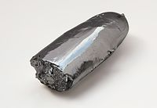

Numero atomico: 44
Massa atomica: 101,1
Temperatura di fusione (°C): 2334
Temperatura di ebolizione (°C): 4150
Energia di prima ionizzazione (kj/mol): 711
Elettronegatività (secondo Pauling): 2,20
Densità: 12,5
Numeri di ossidazione: +2+3+4+5+6+7
Configurazione elettronica: 1s2, 2s2, 2p6, 3s2, 3p6, 3d10, 4s2, 4p6, 4d7, 5s1
Maggiori Informazioni